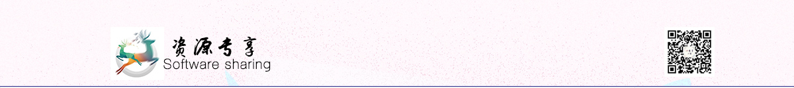

最近看了个想了很久的电影----《楚门的世界》，看完之后我内心有
一种前所未有的压抑感。
讲的是一个叫做楚门的人，他30年前被奥
姆尼康电视制作公司收养，他们刻意培养他使其成为全球最受欢迎的
纪实性肥皂剧《楚门的世界》中的主人公，公司为此取得了巨大的成
功。然而楚门自己却对这些一无所知。
一种前所未有的压抑感。
讲的是一个叫做楚门的人，他30年前被奥
姆尼康电视制作公司收养，他们刻意培养他使其成为全球最受欢迎的
纪实性肥皂剧《楚门的世界》中的主人公，公司为此取得了巨大的成
功。然而楚门自己却对这些一无所知。
他始终认为自己活的和其他人没什么区别，每天上班，下班，吃饭，
睡觉，可是他没有想到，他所做的一切行动都在全世界人的监控下，
全世界人每天都在电视上盯着他......
这是1998年的一部电影，本来是揭露了西方商业活动中惟利是图、
践踏人权的丑恶行径，以及对美国的道德、人情及世态的消极一面进
行了有力的讥讽。
可是放在今天我们再看，它不只是有那层意思，还有就是我们是否也
和楚门一样时时刻刻被别人监控呢？是否和楚门一样别人想知道他干
嘛就能轻而易举的知道呢？
睡觉，可是他没有想到，他所做的一切行动都在全世界人的监控下，
全世界人每天都在电视上盯着他......
这是1998年的一部电影，本来是揭露了西方商业活动中惟利是图、
践踏人权的丑恶行径，以及对美国的道德、人情及世态的消极一面进
行了有力的讥讽。
可是放在今天我们再看，它不只是有那层意思，还有就是我们是否也
和楚门一样时时刻刻被别人监控呢？是否和楚门一样别人想知道他干
嘛就能轻而易举的知道呢？
大数据时代已经到来，方便我们生活的同时也在给我们带来烦恼，
个人隐私的泄露，某些大公司的杀熟行为，无一不告诉我们，个人
隐私正时时刻刻的受到威胁---某度ceo李彦宏在中国发展高层论坛
上说:“中国人对隐私问题的态度更开放，也相对来说没那么敏感。
如果他们可以用隐私换取便利、安全或者效率。在很多情况下，他
们就愿意这么做。
个人隐私的泄露，某些大公司的杀熟行为，无一不告诉我们，个人
隐私正时时刻刻的受到威胁---某度ceo李彦宏在中国发展高层论坛
上说:“中国人对隐私问题的态度更开放，也相对来说没那么敏感。
如果他们可以用隐私换取便利、安全或者效率。在很多情况下，他
们就愿意这么做。
在我看完这则新闻的时候内心百感交集，在外国facebook泄露用户
信息扎克伯格亲自到美国国会致歉怎么放到中国就是愿意泄露了呢？
今天我们就来分享这样一款软件，他可以获取你照片的地理位置信息
（原图），从而定位你去过的地方，非常精准，经度纬度全都有
，分享这款软件不是为了让你们拿去偷窥别人的隐私，而是看看自
己的照片是否都存在隐私泄露的危险。
信息扎克伯格亲自到美国国会致歉怎么放到中国就是愿意泄露了呢？
今天我们就来分享这样一款软件，他可以获取你照片的地理位置信息
（原图），从而定位你去过的地方，非常精准，经度纬度全都有
，分享这款软件不是为了让你们拿去偷窥别人的隐私，而是看看自
己的照片是否都存在隐私泄露的危险。
点击下载
提取码：wkr9